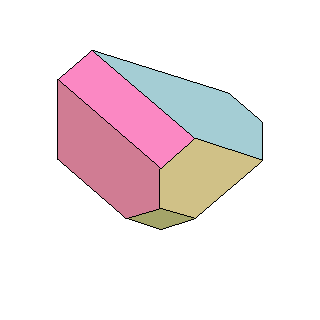
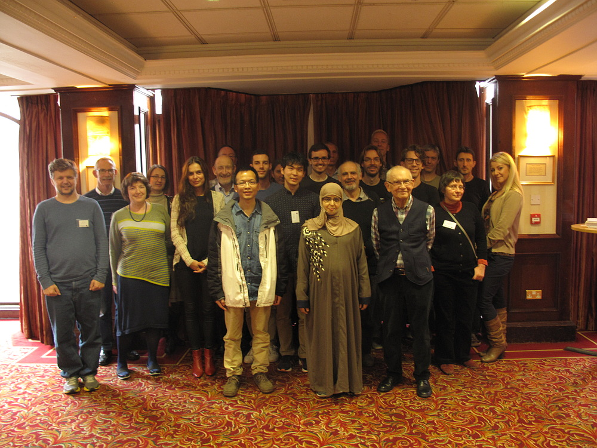

Venue and dates:
Hamilton Mathematics Institute (HMI), Trinity College Dublin, October 23-27, 2017.We gratefully acknowledge support of the HMI, the Simons Foundation, and Science Foundation Ireland.
Description of the workshop:
Since the pioneer work of Tamari (Tamari lattice) in the 1950s and Stasheff (associativity up to homotopy) in the 1960s, it has been very apparent that the combinatorics and the geometry of associativity underpin a wide range of contexts in pure mathematics. More recently, associahedra and related polytopes have been arising in a number of research areas which at a first glance appear far apart from each other (cluster theory, combinatorics, group theory, quiver representations, symplectic geometry, toric geometry).
The purpose of this workshop is to gather together experts in some of these areas who will give lectures and mini-courses to establish a common context in which connections between various research direction can be fruitfully discussed, and the missing links between them can be unravelled.
Invited speakers:Tom Brady, Dublin City University (Ireland)Frédéric Chapoton, University of Strasbourg (France) Patrick Dehornoy, University of Caen (France) Stefan Forcey, University of Akron (USA) Mikhail Kapranov, Kavli IPMU (Japan) Yuri I. Manin, Max Planck Institute for Mathematics (Germany) Martin Markl, Institute of Mathematics, Czech Academy of Science (Czech Republic) Vincent Pilaud, École Polytechnique (France) Jim Stasheff*, University of North Carolina at Chapel Hill (USA) * video lecture |
 An animated 3D associahedron, by Andy Tonks (from the homepage of Jean-Louis Loday) |
Organisers:
Vladimir Dotsenko (HMI/TCD)Victoria Lebed (HMI/TCD)
Registration and financial support:
Registration is now closed.
List of registered participants:
- Nicholas Aidoo, Trinity College Dublin
- Norah Mohammed Alghamdi,Trinity College Dublin
- Paul Barry, Waterford Institute of Technology
- Thomas Brady, Dublin City University
- Frédéric Chapoton, University of Strasbourg
- Pierre-Louis Curien, CNRS - Université Paris Diderot - INRIA
- Patrick Dehornoy, University of Caen
- Vladimir Dotsenko, Trinity College Dublin
- Stefan Forcey, University of Akron
- Jelena Ivanovic, University of Belgrade
- Natalia Iyudu, University of Edinburgh
- Mikhail Kapranov, Kavli IPMU
- Victoria Lebed, Trinity College Dublin
- Jianrong Li, Weizmann Institute of Science
- Fosco Loregian, Masaryk University, Brno
- Yuri I. Manin, MPIM Bonn
- Martin Markl, Math. Institute of the Academy, Prague
- Naruki Masuda, University of Tokyo
- Paul-André Mellies, CNRS, Université Paris Diderot
- Sergey Mozgovoy, Trinity College Dublin
- Andreea Nicoara, Trinity College Dublin
- Daniel Robert-Nicoud, Université Paris 13, Sorbonne Paris Cité
- Jovana Obradovic, Charles University, Prague
- Vincent Pilaud, École Polytechnique
- Cristina Martinez Ramirez, Dublin Business School
- Julian Ritter, École Polytechnique
- María Ronco, University of Talca
- Jim Stasheff, UNC Chapel Hill and University of Pennsylvania
- Pedro Tamaroff, Trinity College Dublin
- Bruno Vallette, Université Paris 13
- Dmitri Zaitsev, Trinity College Dublin
